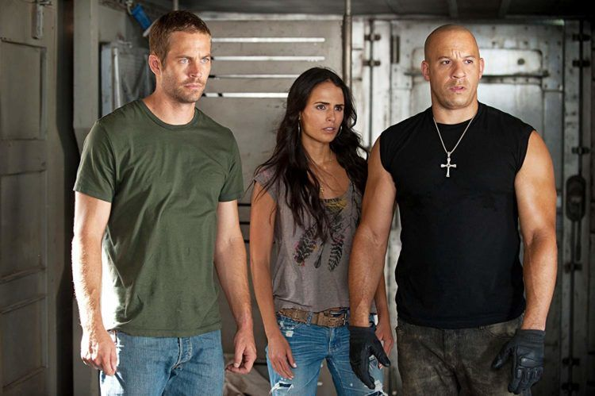

Velozes e Furiosos 5: Operação Rio
"Velozes e Furiosos 5: Operação Rio" (Fast Five) é o quinto filme da franquia "Velozes e Furiosos", lançado em 2011 e dirigido por Justin Lin. Aqui está um resumo do enredo: O filme começa com Dominic Toretto (Vin Diesel) sendo transportado para a prisão. Brian O'Conner (Paul Walker) e Mia Toretto (Jordana Brewster) lideram uma operação para resgatar Dom, fugindo para o Rio de Janeiro. Eles se encontram em uma situação difícil, forçando-os a realizar um último trabalho para ganhar dinheiro suficiente para desaparecer.

Ao chegar no Rio, eles se envolvem em um plano para roubar milhões de dólares de Hernan Reyes (Joaquim de Almeida), um chefe do crime local. Para realizar o roubo, Dom e Brian reúnem uma equipe de pilotos habilidosos, incluindo personagens familiares da franquia e novos membros. Durante o roubo, eles enfrentam desafios intensos, incluindo perseguições de carros espetaculares pelas ruas do Rio e confrontos com as autoridades locais. O agente federal Luke Hobbs (Dwayne Johnson) é enviado para capturar Dom e sua equipe, levando a uma série de confrontos épicos entre Hobbs e Dom.